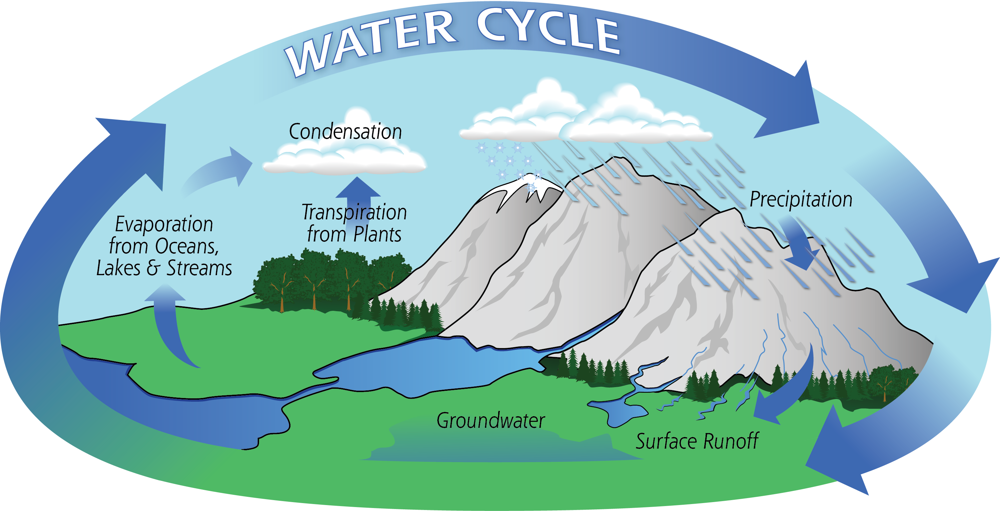

TechBizmo
Sections
Home
What's an Aquifer?
What's Permeability?
Saturated & Unsaturated Zones
The Hydrolic Cycle
Runoff & Wells
Sinkholes, Caves, & CODs
Definitions
The Hydrolic Cycle
What are the 4 Stages?

Precipitation
Evaporation
Transpiration
Condensation
These are the necessary stages of water from the sky, to Earth's ground.